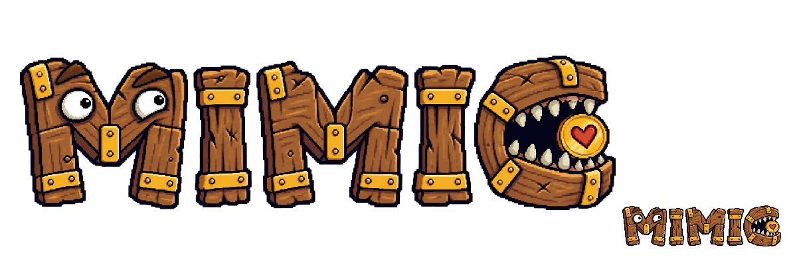
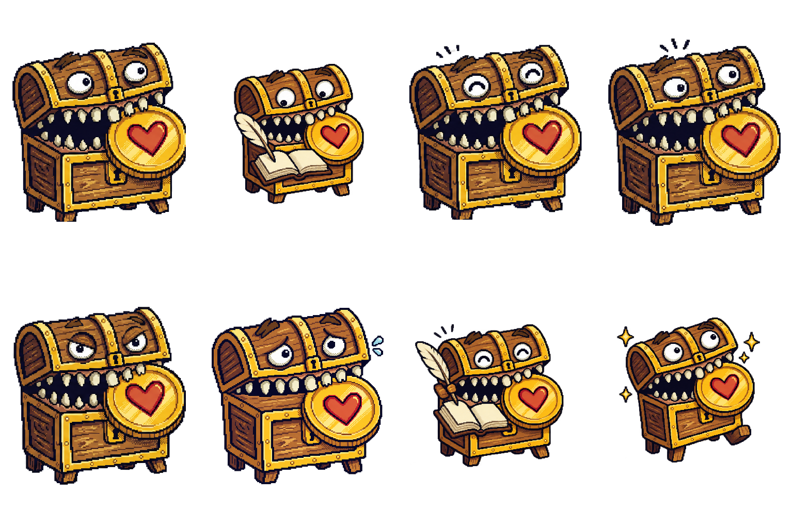
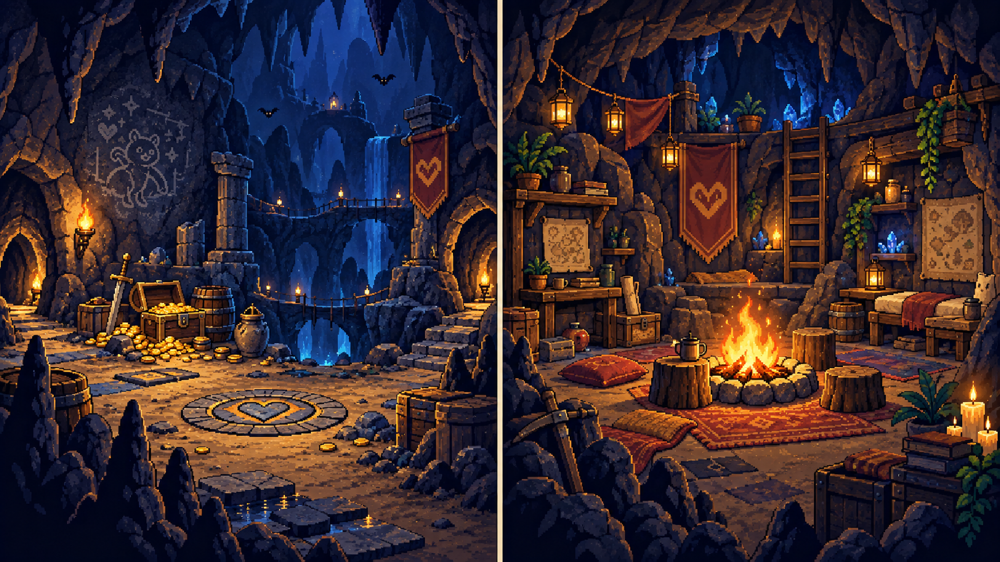
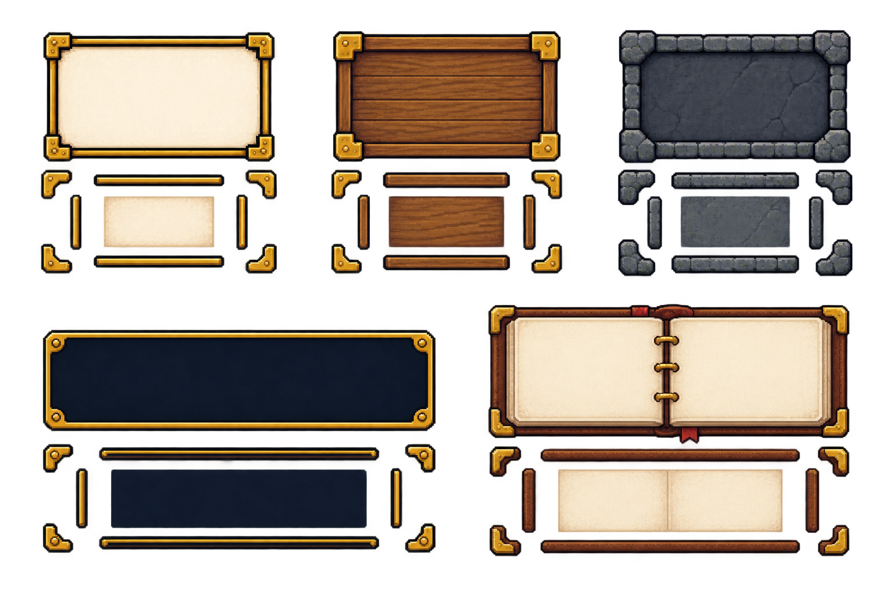
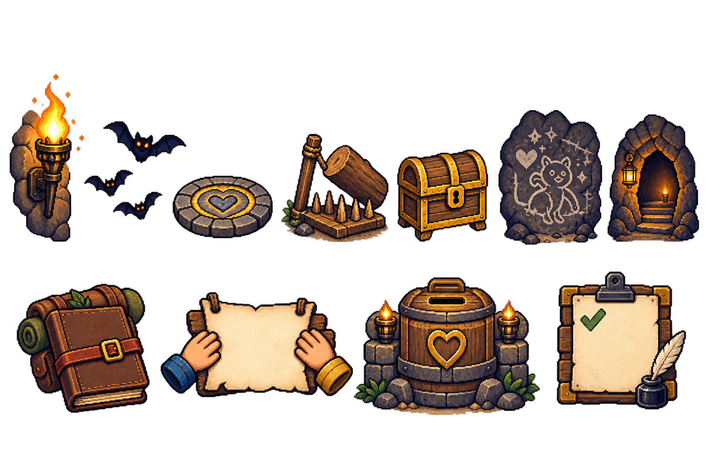

Wordmark
Mismatched wood-and-metal MIMIC construction with eyes in the first M and mouth/heart-coin identity on the final C.
Awaiting calibration review.

Future consumers: Landing, Home, public header, authenticated top rail, and compact brand link. Motion is decorative.
Icons
Install/face scaling, five navigation silhouettes, and three mode cues that remain distinct without hue.
Awaiting calibration review.
Future consumers: PWA icons, favicon, primary navigation, record-expense, mode badges, and typed financial events/statuses.
Mimiku states and actions
This independently generated sheet is retained only as rejected review evidence. The canonical model sheet and six runtime states remain the visual authority for a future replacement.
Rejected/superseded — do not use as a visual reference.

Future consumers: auth, invite, shared route states, loading/empty/error/ offline/success, Home dialogue, and action sequences. Read the canonical asset-lineage audit.
Avatar classes
Eight cosmetic portrait/full-body pairs. Class conveys neither identity, governance, permission, nor accounting meaning.
Awaiting calibration review.
Future consumers: registration, Settings, party and balance rosters, payer/participant formation, and activity actors.
Scenes
Landing central cave with passage interfaces and a separate Home secret- base interior centered on the campfire.
Awaiting calibration review.

Future consumers: Landing and Home only. CTA, recent adventure, navigation, greeting, and financial facts remain outside the pixels.
Frames
Parchment, wood, stone, dialogue, and notebook 9-slice directions with generous quiet interiors.
Awaiting calibration review.

Future consumers: shared panels, legal reading, dialogue, notebook, guild board, and settlement board.
Props
Seven Landing environment props plus separate personal, shared, pooled, and task chapter cues with no reward or balance meaning.
Awaiting calibration review.

Future consumers: named Landing object buttons, feature chapters, and decoration beside live mode/event labels.
Motion
Infrequent wordmark, base idle, one-shot action, skippable completion, and typewriter-final behavior with reduced-motion equivalents.
Awaiting calibration review.
Future consumers: wordmark, character states/actions, cave props, dialogue, and one-time completion. One primary animation maximum.